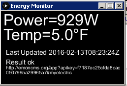
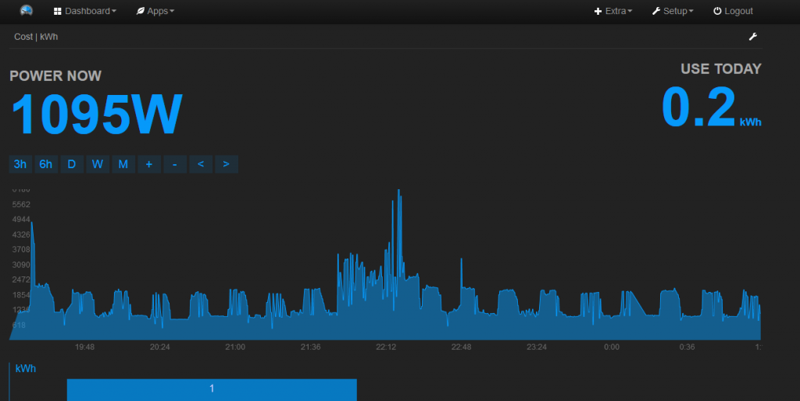

I have the Blueline Wifi Powercost monitor (http://www.amazon.com/Blue-Line-Innovations-BLI-32000/dp/B00EU7NUP6) watching the disc spinning on my meter and reporting my power usage. I'm not sure if Blueline's cloud is down or not because my data isn't showing up on their site, doesn't really matter because I'd rather have it on EmonCMS anyway. Using Wireshark, I found that every 32 seconds, the monitor is broadcasting a UDP packet with the following data:
msgtype=PCMWiFi; DeviceID=XXXXXXXXXXXX; Inst=1959; Reg=13387987; Temp=31; BattLow=0; SQI=66; uTime=1369834215; msgtype=PCMWiFi; DeviceID=XXXXXXXXXXXX; Inst=1943; Reg=13388003; Temp=31; BattLow=0; SQI=66; uTime=1369834246;
msgtype is a constant. DeviceID is the mac address of the unit. Inst is instantaneous Watts. Reg is the Total consumption since last reset/sync. Temp is the temperature in degrees C. BattLow will show 1 when the sensor battery is low, otherwise it is 0. SQI is the signal quality indicator of the wifi unit receiving the signal from the monitor/sensor. It is a percentage. uTime is unix time.
Can anyone recommend a quick and dirty way to get the data into EmonCMS? I found some code on github (https://github.com/DCandE/PCMWiFi) that appears to sniff the data and display it on the screen using a Processing.org program. I might be able to adapt that, but I've never used Processing, and was wondering if there was already a wheel out there or if I needed to invent one.
The machine that will do the packet capture and posting is running Windows 7. I'm open to installing Cygwin on it, but have to keep it running Windows because it is also pulling and posting data from my weather station and the driver only works in Windows.
Thanks,
Matt
Re: Getting data from Blueline Wifi Powercost monitor into EmonCMS
I actually do something very similar, except I do my monitor-to-cloud relaying on a unix machine and my energy monitor is completely different from yours, although it too does UDP broadcasts of its data. I suspect the correct way to solve it is via some sort of plug-in for emonhub, but I don't know enough about emonhub to guide you any further there. My setup pre-dates emonhub and migrating my relay process from a bespoke one to emonhub has long been on my list of things to research, but never seems to get anywhere near the top.
My bespoke code won't be much use to you because we have different energy monitors, but I guess the basic principles apply. I also take advantage of the various unix tools to make the job a bit easier and I've no idea what's available on Windows. But, for what it's worth:
I launch the relay with:
socat takes care of the network listening stuff for me, and my erm_cloud_relay simply processes strings from the energy monitor via standard input (handy for testing it with pre-recorded monitor output as well).
The gist of erm_cloud_relayd is to parse the various incoming strings (mine are completely different from yours):
switch (erm_str[11]) { case 'E': case 'F': case 'G': if (sscanf(&erm_str[12], "%d %d %d %d %d %d %d %d %d %d %d %d %d %d %d %d %d %d %d %d\n", &V_rms, &V_freq, &real_energy[0], &react_energy[0], &I_rms[0], &real_energy[1], &react_energy[1], &I_rms[1], &real_energy[2], &react_energy[2], &I_rms[2], &real_energy[3], &react_energy[3], &I_rms[3], &real_energy[4], &react_energy[4], &I_rms[4], &real_energy[5], &react_energy[5], &I_rms[5]) == 20) {do any pre-processing I want to do on the data, and then at some stage post it to emoncms via libcurl:
snprintf(post_message, sizeof(post_message), "http://emoncms.org/input/post?node=%d&csv=" "%d,%d," "%d,%d,%d," "%d,%d,%d," "%d,%d,%d," "%d,%d,%d," "%d,%d,%d," "%d,%d,%d" "&apikey=xxxxxxxxxxxxxxxxxxxxxxxxxxxxxxxx", node, V_rms, V_freq, real_energy[0], react_energy[0], I_rms[0], real_energy[1], react_energy[1], I_rms[1], real_energy[2], react_energy[2], I_rms[2], real_energy[3], react_energy[3], I_rms[3], real_energy[4], react_energy[4], I_rms[4], real_energy[5], react_energy[5], I_rms[5]); if (debugging_posts) printf("%s%s\n", post_message, (curl) ? " *" : ""); if (curl) { curl_easy_setopt(curl, CURLOPT_URL, post_message); res = curl_easy_perform(curl); }Edit - wrapped long lines - Moderator, BT
Re: Getting data from Blueline Wifi Powercost monitor into EmonCMS
I checked out the pointer to your energy monitor. Have you tried their appliance-recognition stuff? I'm blown away that they can do that solely by looking at LED pulses from the meter. I've always assumed you need huge amounts of detail (current harmonics etc) to have a reasonable chance at that. Do you know if theirs works well?
Re: Getting data from Blueline Wifi Powercost monitor into EmonCMS
Got something working with Processing and figured I would share it here in case it helps anyone else along the way. Probably not the most elegant thing but its my first program since Intro to Fortran back in college.

-----------------------------
import hypermedia.net.*; import java.text.SimpleDateFormat; PFont small, big; int PORT_RX=30278; String HOST_IP = "192.168.1.90";//IP Address of the PC in which this App is running UDP udp;//Create UDP object for recieving String wh=""; float temp=0.0; long timestamp=0; String timestring=""; String Response; String emonlink="http://emoncms.org/app?apikey=<read key>#myelectric"; int battery=0; void setup(){ size(250,150); surface.setTitle("Energy Monitor"); small = createFont("sansSerif",14); big = createFont("sansSerif",32); udp= new UDP(this, PORT_RX, HOST_IP); udp.log(true); udp.listen(true); noLoop(); } void mousePressed() { link(emonlink); //Open EmonCMS page when clicked } void draw(){ textFont(big); background(0); fill(255); text("Power="+wh+"W", 5, 30); text("Temp="+truncate(temp)+"°F", 5, 60); if(battery == 1) { //Show battery warning fill(255,0,0); text("BAT",190,60); } fill(255); textFont(small); text("Last Updated "+timestring, 10, 90); text("Result "+Response,10,110); textSize(10); text("http://emoncms.org/app?apikey=<key 1/2>",10,120); text("<key 2/2>#myelectric",10,130); }//end of draw() float truncate( float x ) { return round( x * 100.0f ) / 100.0f; } void receive(byte[] data){//, String HOST_IP, int PORT_RX){ String value=new String(data); println(value); String[] power = splitTokens(value,"=; "); String url="http://emoncms.org/input/post.json?time="+power[15]+"&node=0&csv="+ power[5]+","+power[7]+","+power[9]+","+power[11]+","+power[13]+"&apikey=<read/write key>"; println(url); String response[]=loadStrings(url); Response=response[0]; println(Response); text("Power="+power[5], 10, 30); wh=power[5]; temp=int(power[9])*1.8+32; timestamp = int(power[15]); //create new date format SimpleDateFormat format = new SimpleDateFormat("yyyy-MM-dd'T'hh:mm:ss'Z'"); timestring = format.format(timestamp*1000); battery=int(power[11]); redraw(); }Edit - wrapped long lines - Moderator, BT
Re: Getting data from Blueline Wifi Powercost monitor into EmonCMS
The appliance mode just temporarily zeroes the display so you can more easily see the power spike from whatever appliance you are running. The sender on the meter only sends a signal every 32 seconds so good luck holding everything else constant in your house long enough to get a reliable reading.
You can see the furnace (gas) coming on and off and some time spent in the wood shop running various tools. Still need to learn about configuring inputs and feeds. As of now it seems my kWh under "USE TODAY" is off but I'm sure once I find some tutorials or something I'll figure it out.
